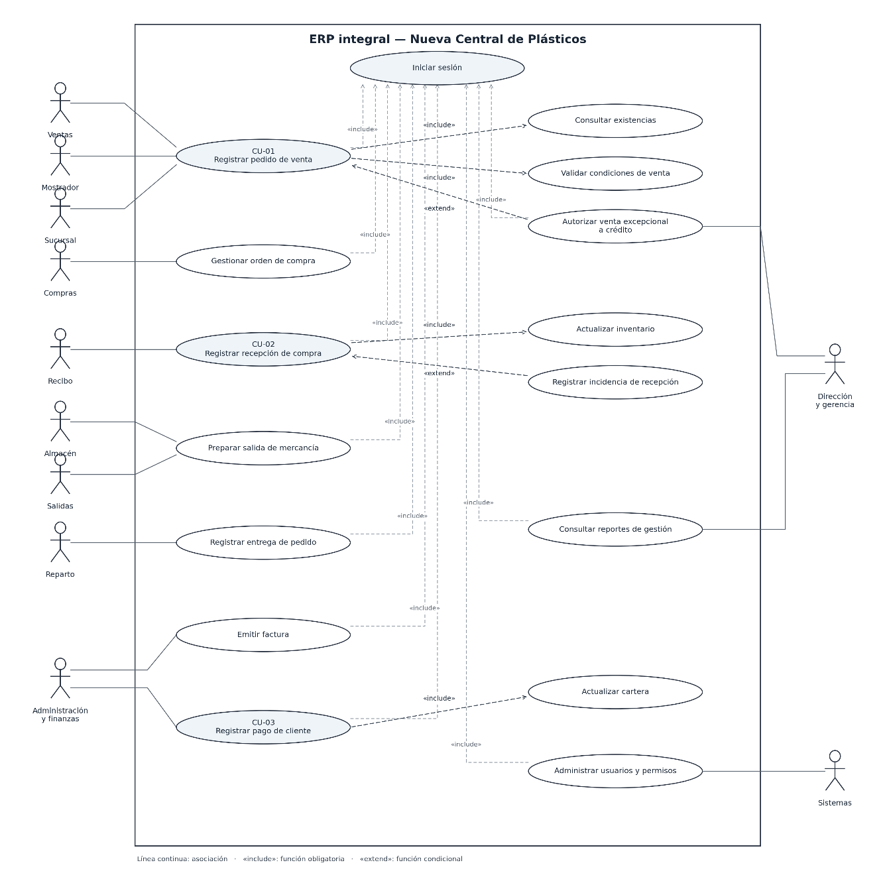

Evaluación de proyectos informáticos
ERP integral para
Nueva Central de Plásticos
Propuesta sustentada en el diagnóstico de operación y sistemas
Presentación ante comité de evaluación · Noviembre de 2026
01 · Empresa y problemática
Una operación que cruza áreas y herramientas
Nueva Central comercializa y distribuye envases, plásticos, desechables, papel y cartón.
Opera una matriz y una sucursal en Nuevo Laredo. El diagnóstico documenta además una operación relacionada en Laredo, Texas, con tratamiento separado.
La oportunidad está en el circuito de compras, inventario, ventas, surtido, reparto, facturación y cobranza.
Fuente: Diagnóstico final de ROMEX, 14 oct. 2026, pp. 3–4.
01 · Empresa y problemática
El pedido cambia de manos y de registro
Hoy se combinan sistema interno, Excel, papel y mensajes. Reconstruir un caso completo exige conciliar información entre áreas.
Fuente: Diagnóstico final, pp. 3–6. Los efectos se describen como riesgos observados, sin cuantificar pérdidas.
01 · Objetivo y alcance
Integrar el circuito, después de comprobarlo
Evaluar la viabilidad técnica, operativa, organizacional y económica de un ERP que conecte procesos, datos, usuarios y controles.
Alcance propuesto
- Validar procesos, reglas y datos.
- Comparar alternativas y probar flujos críticos.
- Realizar piloto, capacitación y despliegue por fases si se aprueba.
Exclusiones de esta decisión
- La evaluación no autoriza una implantación completa.
- Migración histórica ilimitada y desarrollos no diagnosticados.
- Apertura de sedes, fiscalidad extranjera y hardware sin contratación específica.
Fuente: Proyecto 2 corregido, pp. 20–24. Diagnóstico final, pp. 12 y 15–16.
02 · Producto o servicio
Un servicio ERP implementado por etapas
20 usuarios principales del estudio, con perfiles por puesto y sede.
Dirección autoriza. Gerencia y responsables de área validan procesos y resultados.
Configuración, datos, pruebas, capacitación, documentación y soporte.
Fuente: Diagnóstico final, pp. 13–16. Proyecto 2 corregido, pp. 33–39.
02 · Producto o servicio
Casos de uso del ERP propuesto

CU 01Registrar pedido de venta y consultar existencias
CU 02Registrar recepción y actualizar inventario
CU 03Registrar pago y actualizar cartera
El diagrama del proyecto corregido distingue asociaciones, funciones obligatorias y excepciones condicionadas.Fuente: Proyecto 2 corregido, figura 1 y casos CU 01 a CU 03.
02 · Funciones y calidad
La calidad se comprueba con operaciones completas
Indispensable Integración con trazabilidad y permisos por rol.
Posponible Acceso móvil generalizado para todos los puestos.
Fuente: Proyecto 2 corregido, pp. 38–39. Diagnóstico final, pp. 11–15.
03 · Estudio de mercado
La demanda se estudia dentro de la empresa
El estudio busca precisar necesidad, prioridades y condiciones de adopción antes de decidir la implementación.
Son dos unidades distintas. La demanda no cubierta se calcula después de medir cuántos usuarios ya tienen acceso adecuado y cuántos procesos cumplen la cobertura acordada.
Fuente: Proyecto 2 corregido, pp. 39–40 y 53–55. U y P siguen sin cuantificar.
03 · Estudio de mercado
Alternativas con alcances y precios distintos
| Alternativa | Referencia económica | Punto a comprobar |
|---|---|---|
| Sistema interno actual | Costo no determinado | Sostiene la operación, con registros en herramientas paralelas. |
| Odoo Enterprise Custom | US$49 iniciales, luego US$61 por usuario y mes* | Licencias y Odoo.sh separados de la implementación. |
| Odoo Community | Sin licencia Enterprise por usuario | Mayor desarrollo e infraestructura administrada. |
| Business Central Essentials | US$80 por usuario y mes* | Localización, extensiones e implementación adicionales. |
| Alegra ERP Plus | MXN $26,991 al año* | Plan publicado para 10 usuarios; 20 requieren cotización. |
*Precios documentados en el proyecto corregido con consulta del 17 oct. 2026. No son cotizaciones equivalentes ni incluyen todos los costos de implantación.
Fuente: Proyecto 2 corregido, pp. 55–58. Propuesta comercial ROMEX, 14 oct. 2026.
04 · Recopilación de información
Se invita a las 20 personas del grupo
Fórmula de población finita con N = 20, 95 % de confianza, p = q = 0.5 y error teórico de 5 %.
Se plantea un censo del grupo delimitado. El cuestionario de 16 preguntas seguía pendiente de aplicación al corte.
¿Con qué frecuencia tuvo que registrar o copiar un mismo dato en más de una herramienta?
Mide recaptura y ayuda a priorizar integraciones.¿En qué parte de su proceso se concentra el mayor retraso o esfuerzo manual?
Localiza el paso que conviene simplificar primero.¿Qué dos necesidades deberían atenderse primero para mejorar su trabajo?
Ordena el alcance inicial según los usuarios.Fuente: Proyecto 2 corregido, pp. 44–52. Resultado sin encuestas respondidas.
05 · Tamaño y capacidad
La capacidad exige medir usuarios simultáneos
usuarios principales de la fase 1: 25–26 semanas Enterprise o 33–34 Community. Concurrencia diaria sin medir.
usuarios simultáneos como meta de prueba. Hasta 40 cuentas son solo una referencia de crecimiento.
Rendimiento del conjunto y uso observado pendientes de prueba; 18 cuentas históricas no son capacidad real.
20 usuarios × 60 % de concurrencia supuesta = 12 simultáneos. Si la prueba confirma 20, el margen sería 8 usuarios.
Jornada supuesta: 8 h, con 6 h efectivas de personal. Probar 20 sesiones durante 60 min en ambas sedes; confirmar horarios, conectividad y picos reales.
Método: Unidad III, diap. 7–9 y 20–21. Datos: Proyecto 2, pp. 53–55. 60 %, 20 simultáneos y 60 min son metas académicas, no mediciones.
06 · Proceso de operación
Cursograma del pedido: la espera se debe medir
| N.º | Actividad observada | Tipo | Tiempo |
|---|---|---|---|
| 1 | Registrar pedido | ○ Operación | Por medir |
| 2 | Comprobar existencia, unidad y crédito | □ Inspección | Por medir |
| 3 | Esperar corrección o autorización, si aplica | ◖ Demora | Por medir |
| 4 | Surtir y cargar mercancía | ○ Operación | Por medir |
| 5 | Trasladar y entregar al cliente | ➜ Transporte | Por medir |
| 6 | Facturar y registrar cobro | ○ Operación | Por medir |
Validación y espera
Una discrepancia detiene el pedido y puede propagar datos distintos a surtido, entrega y cartera.
Mejora: catálogo depurado, reglas de crédito y un estado único con responsable y folio.
Proceso: Diagnóstico final, pp. 3–8. Símbolos y cálculo: Unidad III, diap. 10–14 y 40–41. No hay tiempos observados para confirmar el cuello.
07 · Tecnología y equipo
Arquitectura para dos sedes y una operación común
Criterios: Unidad III, diap. 9 y 42. Arquitectura: Diagnóstico final, pp. 12–16. Inventario físico, costos y conectividad requieren verificación.
07 · Método de Lange
El costo inicial se suma al costo anual actualizado
Escenario académico: tres años de operación después de liberar la fase 3. Para comparar, se considera todo el saldo de implementación en I0, aunque la propuesta distribuye los pagos.
| Alternativa | I0 neta | Soporte fase 3 / año | Valor presente parcial |
|---|---|---|---|
| Enterprise | MXN $253,200 | $7,900 × 12 = $94,800 | MXN $488,954 |
| Community | MXN $384,400 | $9,900 × 12 = $118,800 | MXN $679,838 |
Enterprise puede sumar hasta MXN $76,757 anuales de licencias y alojamiento antes de superar el costo presente de Community. Estos costos todavía no están contratados.
Método y 10 % / 3 años: Unidad III, diap. 17–19 y 26. Importes y soporte fase 3: propuesta ROMEX, pp. 3–4. Montos sin impuestos.
07 · Método de Lange
Explora el costo que aún falta confirmar
En este escenario, Community presenta el menor costo presente.
La decisión exige comprobar que ambas versiones cumplan funciones, calidad y capacidad. Community incluye servidor estándar según la propuesta.Cálculo con horizonte 3 años y 10 % de Unidad III. US$61: Proyecto 2, consulta 17/10/2026. Cambio y Odoo.sh: supuestos, no cotizaciones.
08 · Localización y distribución
Comparar el alojamiento por condiciones de operación
| Factor | Peso | Odoo.sh | Servidor en matriz |
|---|---|---|---|
| Acceso entre sedes | 0.30 | 8 | 6 |
| Continuidad y respaldo | 0.25 | 8 | 5 |
| Mantenimiento | 0.20 | 8 | 4 |
| Costo verificable | 0.15 | 4 | 4 |
| Control local | 0.10 | 5 | 9 |
| Total ponderado | 1.00 | 7.10 | 5.35 |
Escala 1–10: mayor puntuación = condición más favorable. Pesos y notas son hipótesis del equipo para Enterprise; faltan SLA, cotización, pruebas de enlace y respaldo.
Ventas/PC · almacén/lector · caja/POS
Odoo.sh
Mostrador/POS · almacén/lector
Distribución funcional: puestos conectados a internet seguro en cada sede. Cableado, energía, circulación y ubicación física requieren plano e inventario.
Método: Unidad III, diap. 22–24 y 43–44. Sedes y alojamiento: Diagnóstico final, pp. 14–15. Puntuaciones preliminares del equipo.
09 · Recursos humanos
Responsables distintos para implantar y operar
Autoriza alcance e inversión
Método: Unidad III, diap. 45 y 47. 57 pruebas: Diagnóstico final, p. 13. *45 min, 360 min/día y semana de 5 días son supuestos de planeación.
10 · Recursos y costos
Inversión inicial documentada
| Recurso | Cantidad | Unitario | Total | Frecuencia | Fuente y estado |
|---|---|---|---|---|---|
| Implementación Enterprise | 1 proyecto | MXN $253,200 | MXN $253,200 | Única | Saldo tras crédito del diagnóstico, propuesta 14/10/2026 |
| Implementación Community | 1 proyecto | MXN $384,400 | MXN $384,400 | Única | Alternativa excluyente, propuesta 14/10/2026 |
| Equipos, lectores e impresoras | Inventario pendiente | Por cotizar | Por cotizar | Inicial | Requerimientos del diagnóstico, pp. 12–15 |
Los dos importes de implementación son alternativas. El diagnóstico pagado de MXN $19,900 ya está acreditado una sola vez en ambos saldos.
Fuente: Propuesta comercial ROMEX, 14 oct. 2026, resumida en Proyecto 2 corregido, pp. 56–57. Importes antes de impuestos.
10 · Recursos y costos
Operación recurrente y recursos por verificar
| Recurso | Cantidad | Unitario | Total | Frecuencia | Fuente y estado |
|---|---|---|---|---|---|
| Soporte Enterprise fase 3 | 1 servicio | MXN $7,900 | MXN $7,900 | Mensual | Propuesta 14/10/2026, contratación nueva |
| Soporte Community fase 3 | 1 servicio | MXN $9,900 | MXN $9,900 | Mensual | Alternativa excluyente; servidor incluido |
| Enterprise Custom | 0–20 nuevas | US$61/usuario/mes regular | US$0–14,640/año | Anual | Precio público citado 17/10/2026; suscripción por verificar |
| Odoo.sh | 1 alojamiento | Por cotizar | Por cotizar | Recurrente | Diagnóstico p. 14; escenario de Lange es estimación |
| Sistema interno y equipos | Inventario pendiente | Ya disponibles | Incremental desconocido | En uso | Diagnóstico pp. 3–5; posible aprovechamiento |
En fase 1 el soporte es $3,950 / $4,950 al mes y el primer mes es gratuito una sola vez. Las cuotas se sustituyen al liberar fases; no se suman. MXN y USD se convierten solo en el escenario ilustrativo.
Fuente: Propuesta ROMEX, 14/10/2026, pp. 3–4. Proyecto 2, pp. 55–57. Diagnóstico final, pp. 13–15. Montos sin impuestos.
11 · Riesgos
Tres riesgos que condicionan la decisión
Probabilidad 5 · Impacto 5
Probar cada flujo crítico y excepción antes de autorizar desarrollo.
Probabilidad 5 · Impacto 4
Capacitación por rol, práctica y seguimiento de uso.
Probabilidad 4 · Impacto 5
Depurar catálogos y ensayar cargas conciliadas.
Fuente: matriz de riesgos del Proyecto 2 corregido, pp. 24–29. Escala P × I de 1 a 25.
11–12 · Seguimiento y conclusión
Viabilidad condicionada a pruebas y costos completos
Pruebas críticas aprobadas ÷ previstas × 100. Semanal; evidencia UAT; líder funcional. Meta propuesta: 100 % antes del cambio.
Pedidos con captura duplicada ÷ pedidos observados × 100. Semanal; muestra de pedidos; dueño de proceso. Meta: reducir desde la línea base.
Personas que completan su caso por rol ÷ 20 × 100. Al cierre del piloto; actas de prueba; capacitación. Meta propuesta: 100 %.
El diagnóstico sustenta avanzar por fases. ROMEX recomienda Enterprise por cobertura estándar; el escenario económico puede favorecer Community. La autorización exige pruebas funcionales y de carga, costos contractuales completos y aceptación de Nueva Central.
Método de indicadores: Unidad III, diap. 46. Recomendación: Diagnóstico final, pp. 15–17. Metas propuestas por el equipo; línea base pendiente.
13 · Inclusión y accesibilidad
Un sistema legible y utilizable por teclado
Necesidad considerada: personas con baja visión o que utilizan el teclado para operar.
Adaptación propuesta: contraste suficiente, texto ampliable, foco visible, etiquetas claras y flujo completo sin ratón. Esto permite consultar y registrar operaciones con mayor autonomía.
Diseño propuesto, sin afirmar que el diagnóstico haya identificado a una persona concreta con esta necesidad.Participación en LSM
Carlos “Hola. Mi nombre es Carlos. Gracias.”
Alejandro “Hola. Mi nombre es Alejandro. Gracias.”
Cada integrante practica saludo, presentación con su nombre y agradecimiento con el Glosario Digital de LSM. La expresión facial y el movimiento forman parte de la lengua.
Fuentes: W3C, WCAG 2.2; INDISCAPACIDAD CDMX, Glosario Digital de LSM. Consulta: 18 nov. 2026.